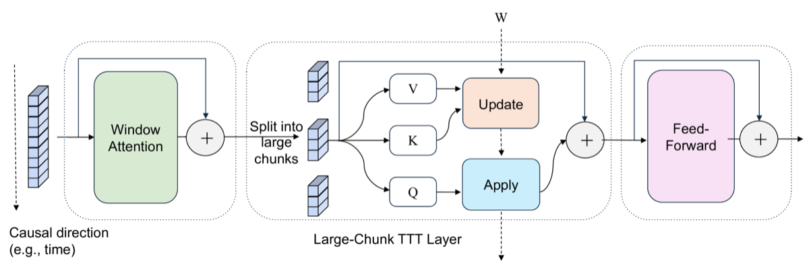

Why it matters왜 중요한가
TTT's bottleneck was never the idea — it was that tiny updates starve the GPU.
TTT의 병목은 아이디어가 아니라, 잘게 쪼갠 갱신이 GPU를 굶겼다는 점이었다.
Linear attention and SSMs (Mamba, GLA, DeltaNet) compress the past into a fixed-size recurrent state. TTT goes further — the "state" is the weights of a tiny network, adapted online by gradient descent so memory is genuinely learned in context. But to respect fine-grained causality, prior work updated those fast weights every 16–64 tokens, which means tiny matmuls, poor parallelism, and FLOPs utilization often below 5% — only achievable at all via fragile custom CUDA kernels. LaCT's claim is almost embarrassingly simple: stop doing that. Treat a large chunk (thousands to a million tokens) as one update unit. Big matmuls saturate the hardware, the state can grow huge, the code becomes plain PyTorch, and — because a chunk is treated as an unordered set — the same layer now handles images, video, and text alike.
선형 어텐션과 SSM(Mamba, GLA, DeltaNet)은 과거를 고정 크기 순환 state로 압축한다. TTT는 한발 더 나아가 그 "state"를 작은 네트워크의 가중치로 두고, 추론 중 경사하강으로 온라인 적응시켜 문맥 메모리를 진짜로 학습한다. 그러나 세밀한 인과성을 지키려고 기존 연구는 fast weight를 16~64 토큰마다 갱신했고, 이는 작은 matmul·낮은 병렬성·흔히 5% 미만의 FLOPs 활용률을 의미했다 — 그것마저 까다로운 커스텀 CUDA 커널로만 가능했다. LaCT의 주장은 거의 민망할 만큼 단순하다: 그러지 마라. 큰 청크(수천~100만 토큰)를 하나의 갱신 단위로 삼아라. 큰 matmul이 하드웨어를 채우고, state가 거대해지며, 코드는 평범한 PyTorch가 되고 — 청크를 순서 없는 집합으로 다루기에 — 같은 레이어가 이미지·비디오·텍스트를 모두 처리한다.

By the numbers핵심 숫자
prior TTT → LaCT (A100)GPU FLOPs 활용률
기존 TTT → LaCT (A100)
fast-weight update한 번의 fast-weight
갱신 청크 크기
as share of model params비선형 state 크기
(모델 파라미터 대비)
scaled to (≤56K tokens)확장한 AR 비디오
디퓨전 모델 (≤56K 토큰)
novel view synthesisnovel view synthesis
최대 문맥 길이
(no custom kernels)순수 PyTorch 줄 수
(커스텀 커널 불필요)
Results — fast prefill, strong quality결과 — 빠른 prefill, 강한 품질
| Model | PSNR ↑ | Prefill latency ↓ | vs Full |
|---|---|---|---|
| Full attention | 39.3 | 16.1 s | — |
| Perceiver attn | 33.7 | — | −5.6 PSNR |
| LaCT (ours) | 39.1 | 1.4 s | ≈ same, 11× faster |
| Setting | PSNR ↑ | SSIM ↑ | LPIPS ↓ |
|---|---|---|---|
| LaCT · 128 views | 28.9 | 0.861 | 0.166 |
In one diagram한 장의 그림
The idea, in two pieces아이디어, 두 조각으로
Large-Chunk Update / Apply
A chunk's tokens are treated as an unordered set. Update takes a gradient step on the fast weight (a bias-free SwiGLU-MLP, W₁/W₂/W₃) minimizing −fW(k)ᵀv over all (k,v) in the chunk; Apply runs the updated W on the queries. Decoupling the two lets you reorder them to emulate full / block-causal / strided masks for sets, text, or video.
청크의 토큰을 순서 없는 집합으로 본다. Update는 청크 내 모든 (k,v)에 대해 −fW(k)ᵀv를 최소화하도록 fast weight(편향 없는 SwiGLU-MLP, W₁/W₂/W₃)에 경사 한 걸음을 두고, Apply는 갱신된 W를 쿼리에 적용한다. 둘을 분리하면 순서를 바꿔 집합·텍스트·비디오용 full / block-causal / strided 마스크를 흉내 낼 수 있다.
Muon optimizer + window attention
Large nonlinear updates can explode in magnitude. LaCT uses the Muon optimizer — it orthogonalizes the matrix gradient and L2-normalizes the fast weight (akin to post-LayerNorm), and consistently beats vanilla GD and momentum. A parallel window-attention path (sharing the QKV projection) handles local structure so the fixed-size fast weight spends its capacity on non-local memory.
큰 비선형 갱신은 크기가 폭발할 수 있다. LaCT는 Muon 옵티마이저를 쓴다 — 행렬 그래디언트를 직교화하고 fast weight를 L2 정규화(post-LayerNorm과 유사)하며, vanilla GD·momentum를 일관되게 능가. 병렬 window-attention 경로(QKV 투영 공유)가 국소 구조를 맡아, 고정 크기 fast weight가 용량을 비국소 메모리에 집중하게 한다.
How it works어떻게 작동하나
- Chunk the sequence big시퀀스를 크게 청킹Split into chunks of 2K–1M tokens, aligned to the data's structure (image patches, a frame, a text window) and treat each chunk as an unordered set.2K~1M 토큰 청크로 나누되 데이터 구조(이미지 패치·프레임·텍스트 윈도)에 맞추고, 각 청크를 순서 없는 집합으로 다룬다.
- Update the fast weight once per chunk청크당 한 번 fast weight 갱신Compute the summed loss −fW(k)ᵀv over the chunk's keys/values and take one large-matmul gradient step, stabilized by the Muon optimizer.청크의 key/value로 −fW(k)ᵀv 합 손실을 구해 큰 matmul 한 걸음을 두고, Muon 옵티마이저로 안정화한다.
- Apply + window attentionApply + window attentionRun the updated fast weight on the chunk's queries for non-local memory, and add a local window-attention output (shared QKV) for intra-chunk structure.갱신된 fast weight를 청크의 쿼리에 적용해 비국소 메모리를, 국소 window-attention 출력(QKV 공유)을 더해 청크 내 구조를 얻는다.
- Reorder masks per modality + parallelize모달리티별 마스크 재배치 + 병렬화Pick the Update/Apply order (full for image sets, shifted block-causal for text, strided for video) and shard via context/tensor parallelism to reach 1M-token and 14B-param regimes.Update/Apply 순서를 고르고(이미지 집합=full, 텍스트=shifted block-causal, 비디오=strided), context/tensor 병렬로 샤딩해 100만 토큰·14B 파라미터 영역에 도달한다.
What to take away그래서, 가져갈 것
Granularity was the wall. Updating in huge chunks instead of tiny mini-batches lifts FLOPs utilization from <5% to ~70% — efficiency comes from rethinking the unit, not a new kernel.
벽은 '갱신 단위'였다. 작은 미니배치 대신 큰 청크로 갱신하니 FLOPs 활용률이 <5%→~70%로 — 효율은 새 커널이 아니라 단위 재고에서 나온다.
Bigger, nonlinear state wins. Scaling the SwiGLU-MLP fast weight to 40% of model params consistently improves quality; nonlinear beats linear even at smaller state.
크고 비선형인 state가 이긴다. SwiGLU-MLP fast weight를 모델의 40%까지 키우면 품질이 일관되게 향상되고, 비선형은 더 작은 state로도 선형을 능가.
One layer, three modalities. The same LaCT block powers image-set view synthesis, language modeling, and 14B video diffusion — matching or beating full attention each time.
한 레이어, 세 모달리티. 같은 LaCT 블록이 이미지셋 뷰 합성·언어 모델·14B 비디오 디퓨전을 구동 — 매번 full attention과 동등하거나 능가.
Pure-PyTorch, kernel-free. A few dozen lines, no custom CUDA — lowering the barrier so the TTT design space is finally easy to explore.
순수 PyTorch, 커널 불필요. 수십 줄·커스텀 CUDA 없음 — 진입장벽을 낮춰 TTT 설계 공간을 마침내 쉽게 탐색.